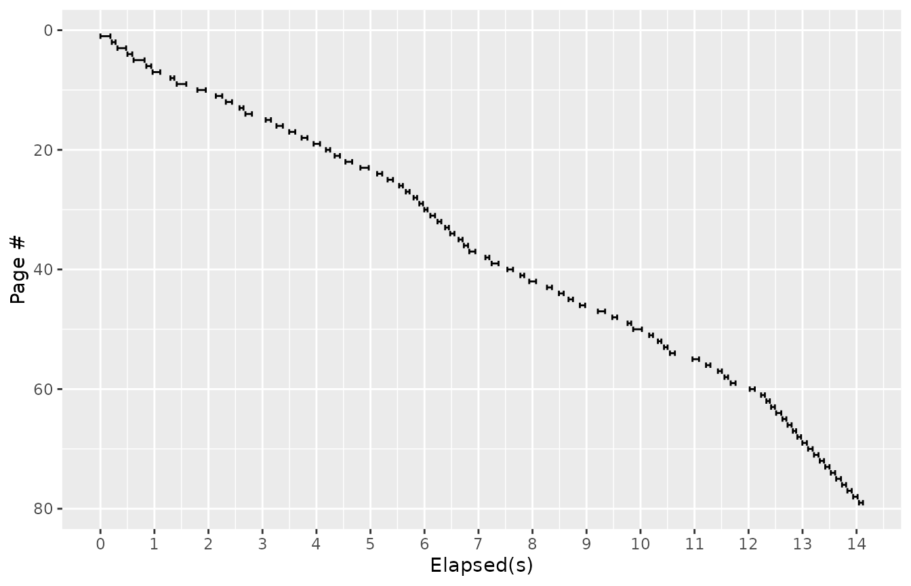
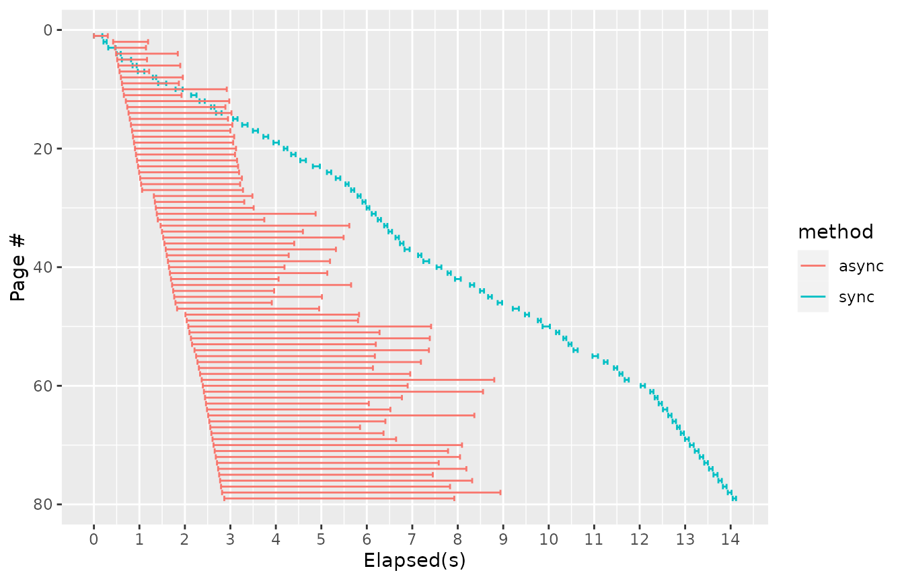

A common data science task is extracting data from a website. Many public-facing websites do not have a public facing API; one has to extract information from the HTML pages instead.
This document explores building a simple web spider and shows how its
performance can be improved using asynchronous processing. Along the way
is introduced the async and await operators
which allow you to write functions which can operate concurrently,
pausing and resuming as data become available.
For a simple case, say you wanted to gather the graph of a site –
every URL linked to from every page. You could use the curl
package to fetch web pages, and the XML package to parse
the links out of their content. Without using any asynchronous
processing, a simple web spider might look like this:
## Using libcurl 7.81.0 with OpenSSL/3.0.2First we have a helper function to extract a list of links from a downloaded web page.
extract_links <- function(data) {
(data$content
|> rawToChar()
|> XML::getHTMLLinks(externalOnly=TRUE)
|> vapply(FUN.VALUE="",
\(link) tryCatch(XML::getRelativeURL(link, data$url, addBase=TRUE),
error=\(e) NA_character_))
|> na.omit()
|> as.character())
}Then the meat of the task is covered in this function:
spider_site <- function(
start_pages, #starting URLs
regexp, # Linked URLs must match this to be
limit=500) { # maximum number of pages to collect
#all encountered pages will be collected in this hash table
pages <- new.env()
# keep track of how many URLS seen and stop after a limit
seen <- 0
# inner helper function:
is_new_page <- function(url) {
is_new <- (seen < limit) && !exists(url, pages) && grepl(regexp, url)
if (is_new) {
#mark this page as "in progress" and increment counter
pages[[url]] <<- list()
seen <<- seen + 1
}
is_new
}
# define inner recursive function to visit a page
visit_page <- function(url) {
cat("visiting ", url, "\n")
# Fetch the page
start_time <- Sys.time()
data <- curl_fetch_memory(url)
end_time <- Sys.time()
# extract the links and store our page in the hash table.
links <- extract_links(data) |> unique()
pages[[url]] <- data.frame(
url = url, start = start_time, end = end_time, links = I(list(links)))
#recursively follow new links, if within the site filter
( links
|> Filter(f=is_new_page)
|> lapply(visit_page))
invisible(NULL)
}
# Kick off by visiting each page in the starting set.
start_pages |> lapply(visit_page)
#Return our hash table as a data frame with "links" as a list-column.
pages |> as.list() |> do.call(what=rbind)
}To narrate the above: The outer function spider_site
holds a hash table of all known pages, and that table is filled out by
calling inner function visit_page. In
visit_page we request and receive the web page, extract all
the links, and recursively follow any links that fall within the site
regexp – as long as those URLs haven’t been seen before
To spider a site, here, give it a starting function and a filtering regexp, like so:
spidered <- spider_site("https://mysite.example/webapp", "mysite\\.example/")
saveRDS(spidered, file="spidered.rds")(Since building packages should not perform a DDoS, the above is not run in the vignette; I’ve included an example dataset instead.
spidered <- readRDS("spidered.rds")The above spider is synchronous; when it requests a web
page, it waits for the entire page to be retrieved before continuing.
For curl_fetch_memory to return a value, it needs to open a
TCP connection to the remote server, send the request, wait for the
network to carry the request to the server; then the server must process
the request and send the result back over the network, then the client
must wait for the whole page to come over the network we can process a
list of links out of it.
Along the way we recorded “start” and “end” times, before we sent the request and after we received the results. So we can visualize the time course of our web spidering thus:
library(ggplot2)
time_plot <- function(results) (
ggplot(results)
+ aes(xmin=start-min(start), xmax=end-min(start), y=rank(start))
+ scale_x_continuous("Elapsed(s)", breaks=0:16, minor_breaks=seq(0, 16, by=0.5))
+ scale_y_reverse("Page #")
+ geom_errorbarh()
)
time_plot(spidered)
Most of this time is spent waiting on the inherent latencies of the
network, rather than using the local CPU for anything. Latency can
become a bottleneck limiting the performance of any application that
relies on other servers. In this test
R (curl.time / elapsed.time)*100% of the time is spent
waiting for curl. The remainder of the time is spent on
parsing the HTML and extracting links.
For this reason, it would save a lot of time spent waiting if we
could be working on more than one connection at a time. In fact, package
curl does have a sort of asynchronous interface that allows
it to use multiple connections. You can request a page with
curl_fetch_multi(url, done, fail), which accepts a pair of
callbacks for normal or error return values. Behind the scenes,
libcurl maintains a connection pool and can keep track of
multiple pending requests.
After you call curl_fetch_multi, at some point in the
future it will call the done or fail. There is
a catch, though: You need to periodically call
curl::multi_run to allow libcurl to do its
thing. Because libcurl does not run in a separate process;
it only does anything when R calls it. When you call
curl_fetch_multi curl will add your request to a queue, but
you need to call multi_run for it to perform the next steps
– sending, receiving, and assembling the received data.
So, to use concurrent connections, the above program could be rewritten to. To sketch it out:
visit_page needs to have inner functions, say
process_page and process_error, to serve as
callbacks.spider_site would need to be built around a loop that
calls multi_run until all pages have been downloaded,
rather than a recursive function.This would amount to some restructuring of our program. But rather
than rewrite the whole logical flow of our spider, there’s a way to
abstract away most of the needed changes, That’s where the
async package comes in.
curl to promises
Many things with asynchronous interfaces have their own ad-hoc APIs
for calling them; here libcurl uses
curl_fetch_multi and multi_run. The
async package relies on the promise class,
from package “promises,” as a unifying
abstraction for asynchronous requests. To use an ad hoc asynchronous API
with the async package, the first step is often to make a
shim presenting that that API in terms of promises.
Here is a function which accomplishes that:
library(later)
library(promises)
# global variable
curl_is_active <- FALSE
curl_fetch_async <- function(url) {
# Promise constructor provides two callback functions
# which fit right in curl_fetch_multi's arguments
pr <- promise(function(resolve, reject) {
curl_fetch_multi(url, done=resolve, fail=reject)
# since we've just told curl to do something new, let it start
multi_run(timeout = 0, poll = TRUE)
})
# And then start checking it periodically
if (!curl_is_active) {
curl_is_active <<- TRUE
later(poll_curl)
}
pr
}The first part of curl_fetch_async is straightforward:
we call the promise constructor, which gives us two
callback functions resolve, and reject, that
plug right in to the arguments for curl_fetch_multi. So the
promise object is constructed that will represent the
pending page download.
Calling curl_fetch_multi just adds our request to
libcurl’s queue; The rest of the function has to do with arranging to
call multi_run, where libcurl actually does
its work. We call multi_run once after adding the request,
to allow it to start opening a connection. After creating the promise,
we check a global flag and if not set we call
later(poll_curl). What this does is to arrange for
poll_curl (defined below) to be called later, in R’s event
loop.
R’s event loop runs while R is otherwise idle or awaiting input. R enters the event loop when it is waiting for the user to give input at the prompt; in the event loop R repeatedly checks for keyboard input as well as other things, like network connections or GUI events.
For example, the builtin HTTP server help.start() uses
the event loop; when it is active the event loop will periodically check
for and handle incoming HTTP connections. The Shiny web server also does
this. When a graphics window is open, the event loop is where R checks
for mouse clicks or window resizes. And the promises
package, and by extension async uses the event loop to
schedule processing.
The later package provides a simple interface for us
to to use R’s event loop to check in things. Above, in
curl_fetch_async we called later(poll_curl),
which arranges for poll_curl to be called on the next run
through R’s event loop. Here is the definition of
poll_curl:
poll_curl <- function() {
if (length(multi_list()) == 0) {
curl_is_active <<- FALSE
} else {
multi_run(timeout = 0.001, poll = TRUE)
later(poll_curl)
}
}This calls curl’s multi_run which, given
poll=TRUE will do what it’s been tasked with – opening,
sending requests, and reading whatever data has been received. We give a
short timeout in case something else wants to use the event loop. And
finally we use later to do this again the next time through
the loop.
The global flag curl_is_active is used to keep from
cluttering up the event loop with multiple concurrent checks, and to
make sure we stop polling curl once all requests have been
filled.
Interfacing curl with async was the hard
part. Now that this is accomplished, making our spider asynchronous is
simple. Here is the asynchronous version of our web spider:
library(async)
spider_site_async <- async(function(
start_pages, #starting URLs
regexp, # Linked URLs must match this to be
limit=500) { # maximum number of pages to collect
#all encountered pages will be collected in this hash table
pages <- new.env()
# keep track of how many URLS seen and stop after a limit
seen <- 0
# inner helper function:
is_new_page <- function(url) {
is_new <- (seen < limit) && !exists(url, pages) && grepl(regexp, url)
if (is_new) {
#mark this page as "in progress" and increment counter
pages[[url]] <<- list()
seen <<- seen + 1
}
is_new
}
# define inner recursive function to visit a page
visit_page <- async(function(url) {
cat("visiting (async) ", url, "\n")
# Fetch the page
start_time <- Sys.time()
data <- curl_fetch_async(url) |> await()
end_time <- Sys.time()
# extract the links and store our page in the hash table.
links <- extract_links(data) |> unique()
pages[[url]] <- data.frame(
url = url, start = start_time, end = end_time, links = I(list(links)))
#recursively follow new links, if within the site filter
( links
|> Filter(f=is_new_page)
|> lapply(visit_page)
|> promise_all(.list=_)
|> await())
invisible(NULL)
})
# Kick off by visiting each page in the starting set.
start_pages |> lapply(visit_page) |> promise_all(.list=_) |> await()
#Return our hash table as a data frame with "links" as a list-column.
pages |> as.list() |> do.call(what=rbind)
})For the most part, this is almost identical to the non-asynchronous version. In fact the only differences are:
spider_site and
visit_page are both wrapped in async.curl_fetch_memory() is replaced by
curl_fetch_async(url) (which we defined above) followed by
await().lapply(visit_page) are followed by
|> promise_all(.list=_) |> await().Wrapping a function definition in async creates an async
function. This is effectively a function that can pause and resume.
Calling an async function does not execute the function immediately, but
returns a promise, that will be resolved with the function’s eventual
return value. The function will actually begin executing the next time R
runs the event loop.
When an async function reaches a call to await(x), it
pauses, allowing R’s event loop to continue. The argument to
await should be a promise. After that promise resolves, the
awaiting function will then resume with that value.
To unpack the phrase
lapply(visit_page) |> promise_all() |> await(): As
visit_page is now an async function,
lapply(visit_page) will create a list of promises.
promise_all()
combines them into one promise. The await() then causes the
outer function to pause and return to the event loop. In total, this
phrase means to make several asynchronous calls to
visit_page, then pause until all of those calls have
resolved. Effectively, this makes several concurrent calls to
visit_page.
When the outer function pauses, R will then be free to move to the
next task in the event loop, namely to start running the first of those
visit_page calls. It calls curl_fetch_async
and pauses, causing a new task is added to the queue: call
poll_curl. Each of the other calls to
visit_page do so in turn.
Then the event loop gets to poll_curl, which calls
multi_run which finally allows libcurl to get to work,
opening connections and sending requests. When the first received page
is complete, curl_fetch_async’s promise resolves, allowing
the calling visit_page to resume; it now can run and
extract the links from the page. Having done so, it adds a few more
visit_page calls to the event queue, and so on we go
recursively.
The effect is, our concurrent spider is doing everything the
non-concurrent one did, in the same logical order, given that
the code is nearly the same and all, but in a different
temporal order. Putting a few await calls here and
there allowed the task to be divided up in pieces that could run without
waiting on each other.
You can view the way we are using async functions and event loop here as a form of “cooperative” multitasking; dividing a single thread’s attention across several concerns.
As we have recorded a timestamp when we start and finish each request, we can illustrate the difference in performance.
Now let’s compare the asynchronous and synchronous versions of the same pipeline.
spidered <- spider_site("https://mysite.example/webapp", "mysite\\.example/")
spidered_async |> then(\(x) x |> saveRDS("spidered_async.rds"))(Again, the above isn’t run in the vignette; here’s a precomputed test file.)
spidered_async_data <- readRDS("spidered_async.rds")Let’s look at the elapsed time for both runs on the same chart:
##
## Attaching package: 'dplyr'## The following objects are masked from 'package:async':
##
## collect, combine## The following objects are masked from 'package:stats':
##
## filter, lag## The following objects are masked from 'package:base':
##
## intersect, setdiff, setequal, union
spidered <- (spidered
|> mutate(method="sync", order=rank(start),
end=end-min(start), start=start-min(start)))
spidered_async_data <- (spidered_async_data
|> mutate(method="async", order=rank(start),
end=end-min(start), start=start-min(start)))
(rbind(spidered, spidered_async_data)
|> time_plot()
+ aes(y=order, color=method))
We can see that in the asynchronous version, page requests overlap;
one page does not have to be received and processed for it to start
working on the next. This allows for there to be several requests “in
the air” at any one time. The pages are processed and links are
extracted as the results come back. Concurrency allows the whole task to
be done quicker. As a side effect, any individual request takes longer
to be completed; Increasing throughput with concurrency often does have
the effect of increasing the latency for any one element of data to be
processed. Much of the latency between start and
end is actually accounted for by the request waiting in
licurl’s queue, as libcurl has a sensible default maximum of 6
concurrent connections for a single host.
The async/await construct helps a
single-threaded R process to interact with a concurrent world. Using
async, your programs can have a familiar sequential
structure, but multiple async functions can run concurrently as process
data as it becomes available. This means your program can spend less
time waiting and more time processing.